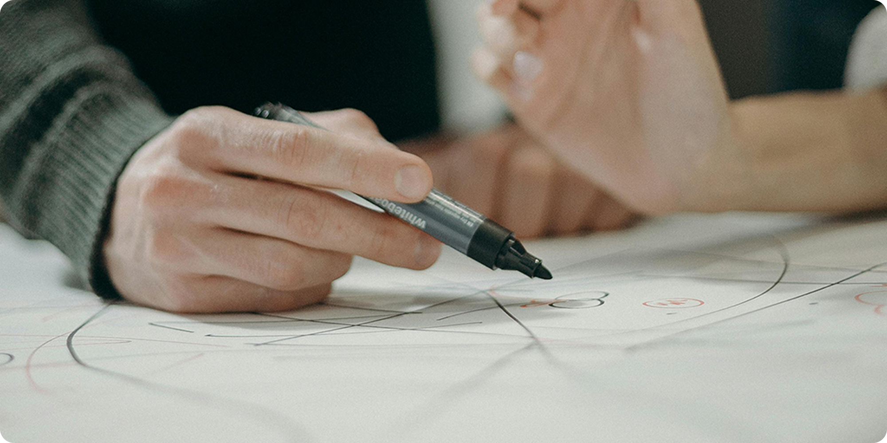

추가 비용 없도록 맞춤 선택의 폭을 넓혔으며 의례 진행 후 미사용 품목에 대해서는 환불해드립니다.
Yedaham
06
기업의 이윤보다는 먼저 고객의 마음과 소리에 귀 기울이겠습니다.
계약 후 해지요청 시 불입원금을 전액 환불해 드리며, 계약조건과 다른 물품 제공 시 불입원금 전액 환불 및 무료 행사를 지원합니다.
Yedaham
07
수익의 일부는 사회에 환원하여 건전하고 따뜻한 사회를 만드는데 앞장서겠습니다.
조손 가정 장례 행사를 지원합니다.

윤리실천리더선정
예다함은 윤리경영의 활성화 및 임직원들의 윤리마인드 향상을 위해 팀/지부별로 윤리실천리더를 선정하여 상시적으로 비윤리 예방활동을 실시하고 있습니다.
매년 윤리실천리더 워크샵을 개최하여 ‘윤리경영의 필요성, 윤리경영 우수사례 전파, 기업윤리 실천활동’ 등에 대해 토의하여 실천 운영계획을 수립/시행하고 있습니다.
선물반송센터 운영
예다함은 이해관계자로부터 정당하고 공정한 관계를 형성하기 위해 매년 명절(설, 추석)선물 반송센터를 운영하고 있습니다.
선물 반송센터는 이해관계자가 보내온 선물을 접수 받아 정중한 반송의 뜻을 담은 반송 스티커와 함께 회사의 비용으로 되돌려 보내고 있습니다. 또한, 명절 외에 평상시에도 이해관계자로부터 받은 통상적 수준이 넘는 선물은 선물 반송센터를 통해 상시적으로 반송하고 있습니다.
윤리교육 및 성희롱 예방교육
예다함은 윤리경영의 정착을 위해서는 반복적이고 일상적인 교육을 통한 윤리적 가치관의 정립이 우선이라고 생각하여, 정기적으로 교육을 실시하고 있습니다.
윤리적 지식과 소양 함양을 위해 매년 정기적으로 전 임직원을 대상으로 윤리교육 및 성희롱 예방교육을 온/오프라인을 통해 실시하고 있습니다.